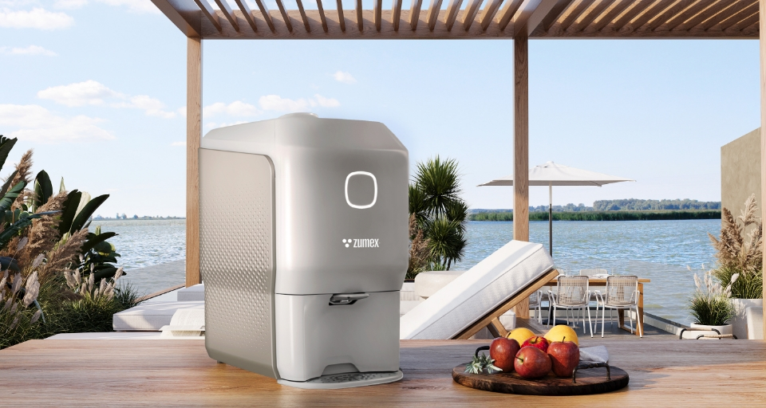
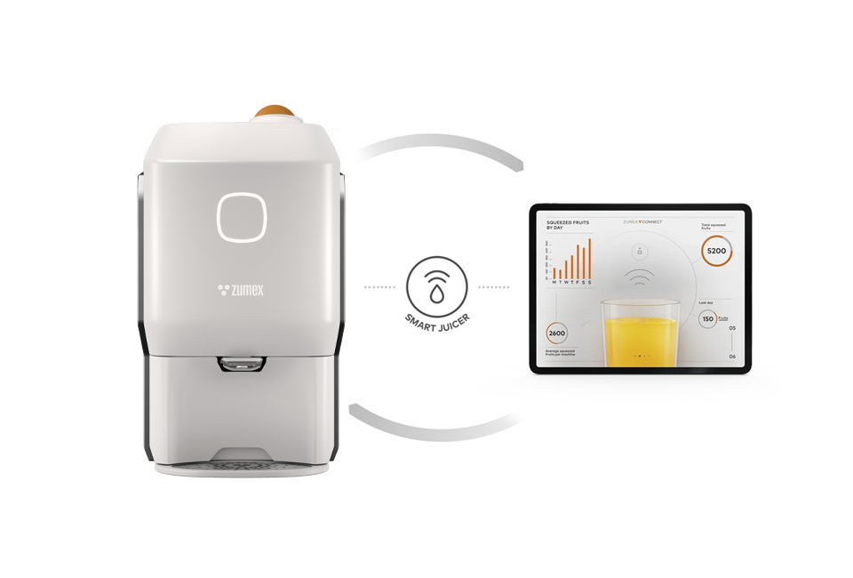
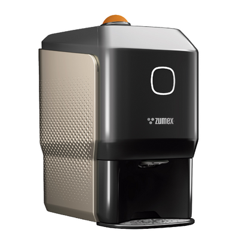
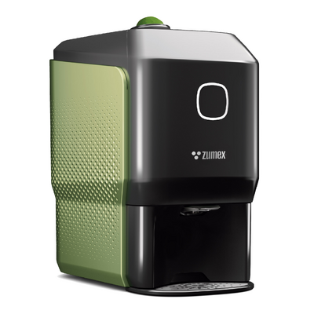

Citrusové odšťavňovače
Soul Series 2
Malý prostorem. Velký zážitkem.
Kompaktní odšťavňovač pro kavárny, bary a hotely. Conical System® zpracovává citrusy šetrně a připojení Wi-Fi vám pomůže sledovat provoz. Pro limetky je k dispozici samostatná edice.
Poptat tento produktCenu a dostupnost vám potvrdíme podle konfigurace.
18 plodů/minVýkon se sadou M/S
300 × 480 × 537 mmRozměry
32 kgHmotnost
Navržen pro váš provoz.
Soul Series 2 přináší automatické lisování citrusů i na bar, kde je každý centimetr důležitý. Se šířkou 30 cm nabízí čerstvou šťávu na objednávku v kavárně, koktejlovém baru nebo hotelu. Conical System® ovoce před rozříznutím vystředí a připraví pro lisování.
Podle zvolené sady zpracuje pomeranče, mandarinky, citrony nebo limetky. Systém PulpOut průběžně odstraňuje dužinu a semena; lisovací jednotku lze vyjmout pomocí 1Step Case Out. Wi-Fi propojení se Zumex Connect umožňuje sledovat provoz a upozornění.
Výměnné sady pro pomeranče, mandarinky, citrony a limetky.
Chytré funkce a provozní přehled prostřednictvím Zumex Connect.


VYBERTE SI PROVEDENÍ
Jedna řada. Vaše konfigurace.

Soul Series 2
Vyberte sadu podle skutečné velikosti ovoce. Limes edition dodává výrobce se sadou XS. Pro provoz mimo bar lze poptat Juice Kart, dávkovač kelímků nebo bezhotovostní modul.
Poptat variantu
Soul Series 2 Limes edition
Pro limetky se sadou XS; vhodné pro bary a přípravu citrusových základů.
Poptat variantuFotografie jsou ilustrační pro danou řadu. Výbava a technické parametry se mohou lišit podle varianty.
PODROBNĚ A PŘEHLEDNĚ
Technické parametry.
- Výkon M/S
- 18 plodů/min
- Výkon XS
- 36 limetek/min
- Rozměry (š × h × v)
- 300 × 480 × 537 mm
- Hmotnost
- 32 kg
- Zásobník
- 3–6 pomerančů / 7–8 limetek
- Průměr ovoce M
- 64–81 mm
- Průměr ovoce S
- 45–65 mm
- Průměr ovoce XS
- 42–52 mm
- Příkon
- 100 W
- Napájení
- 100–240 V, 50–60 Hz
- Odpadní nádoba
- 7 l
- Připojení
- Wi-Fi / Zumex Connect
Údaje výrobce pro uvedené provedení. Výkon závisí na surovině a konfiguraci. Zdroj: Zumex ↗
Co zvážit při výběru
Vyberte sadu podle skutečné velikosti ovoce. Limes edition dodává výrobce se sadou XS. Pro provoz mimo bar lze poptat Juice Kart, dávkovač kelímků nebo bezhotovostní modul.
Probrat vhodnou konfiguraci ↗VŠE PODSTATNÉ PO RUCE
Technické podklady.
Podrobnosti, dostupné příslušenství a materiály výrobce.